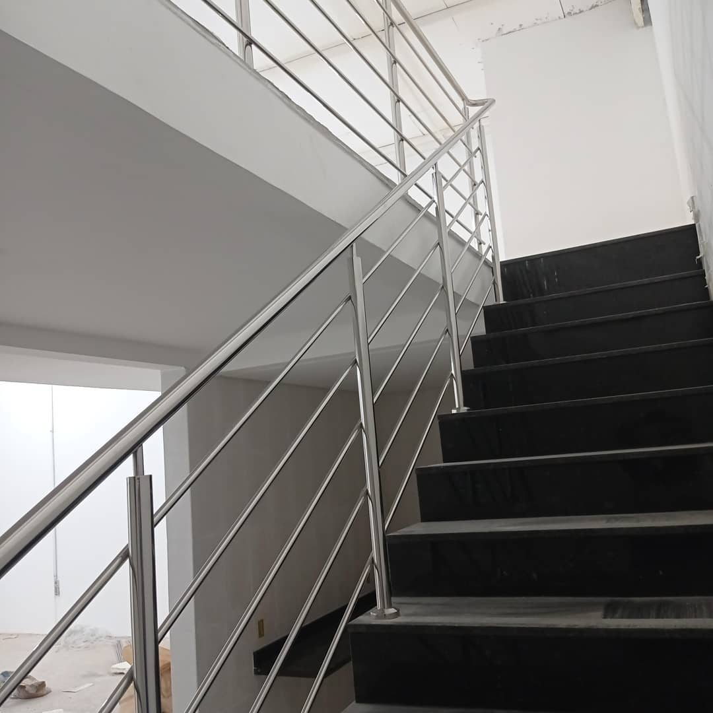
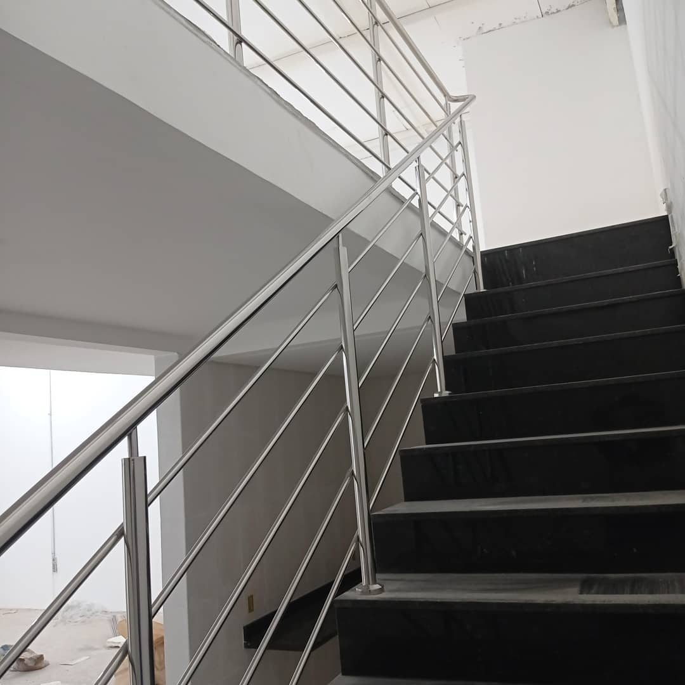

Qual produto você precisa ?
Produtos > Guarda-Corpo
 

Solicite um Orçamento
(62) 99604-3129

Guarda-Corpo de Inox
Antes de tudo, a principal função do Corrimão é a Segurança. Toda Casa ou Empresa que tem uma escada necessita de um Corrimão, seja pra colocar na Parede ou no Piso. O Corrimão e o Guarda-Corpo de Inox são peças essenciais para apoio ao subir ou descer de um ambiente para o outro. Contudo, também são estruturas que valorizam muito o ambiente, trazendo um aspecto de limpeza e bem estar.
Veja nosso instagram temos diversos
modelos de corrimão

Dúvidas
Qual a altura nescessária para um corrimão ?
1.10 Metros.
Quando e nescessário um corrimão ?
Toda Casa ou Empresa que tem uma escada necessita de um Corrimão, seja pra colocar na Parede ou no Piso.
Oque é a norma técnica NBR 14.718 ?
A norma guarda corpo e corrimão está diretamente ligada à segurança nas construções. Assim, são elementos fundamentais em edificações que além da segurança trazem um toque particular de acordo com sua aplicação.